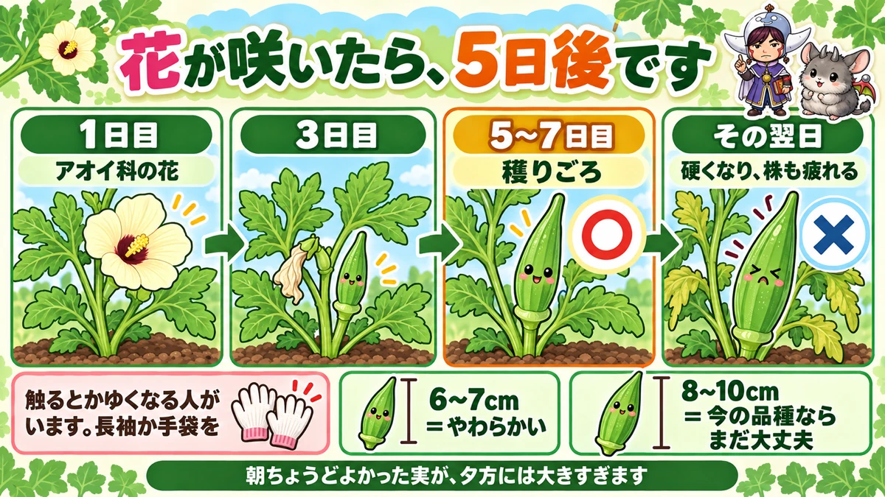
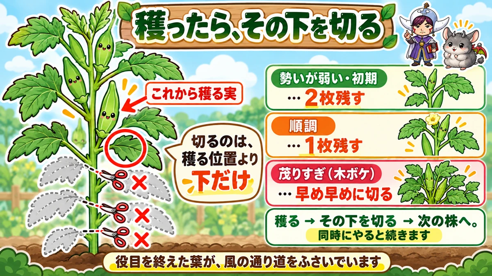
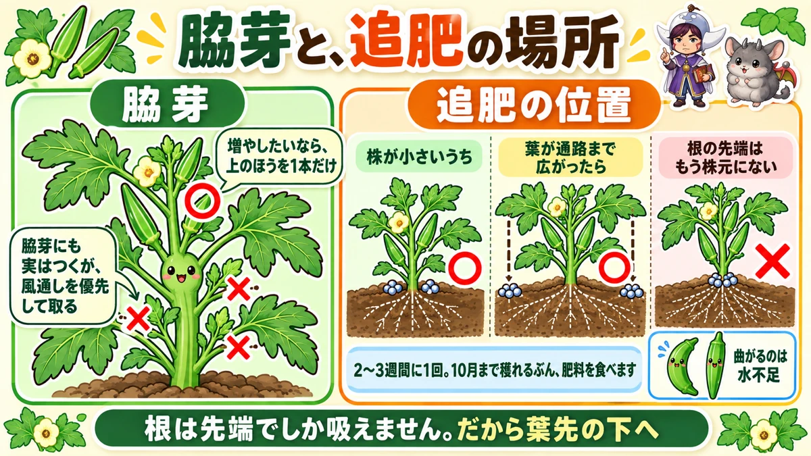

Okra goes tough in a day 🌿 At the peak, pick morning and evening

🌿 "I looked away and it was too tough to eat."
🌿 "Plenty of leaves and hardly any pods."
🌿 "My hands itch when I pick it."
Hello, I'm Eiko. Eight years of growing vegetables organically and without pesticides, and a teaching licence in science.
The headline:
Okra goes tough in a single day.
So at the peak, pick twice — morning and evening. That's the whole explanation for "it was still small yesterday".
Two per station slows the growth down — a single plant gets away with itself and the pods toughen faster.
Wear long sleeves
Saying this first: okra leaves and pods carry fine hairs, and some people react to them. I picked in short sleeves once and my arms came up bright red. Long sleeves or gloves — one or the other.
Five days from flowering

What this diagram says （図解の文字）
- Once it flowers, it's five days
- day 1 — "a mallow-family flower" ／ day 3 ／ days 5–7 — ready ○
- ✗ "the day after that" — "tough, and the plant is tired"
- "Some people itch when they touch it. Long sleeves or gloves"
The flower is worth seeing
If you've never seen an okra flower, do. A large cream flower, very like a hibiscus — which makes sense, since they're relatives. It still surprises people.
Five to seven days to a pod
From that flower, five to seven days to a pod of picking size.
So when you see a flower, mark five days ahead. That's the most reliable guide there is.
8–10 cm is plenty
Older books say pick at 6–7 cm (2½ in). Modern varieties are fine at 8–10 cm (3–4 in) — breeding has moved on.
That said, if you like them tender, pick at 6–7 cm. Smaller genuinely is better eating.
Pick twice a day
Early in the season once a day is enough. At the peak it isn't.
A pod that was right this morning is oversized by evening. It really does grow that fast.
Two costs to letting them get big
- They go tough and stringy
- They load the plant, so the next pods come with less vigour
The second matters quietly. Leave one large pod and the harvest beyond it falls — the same story as peppers and squash.
Cut with scissors
Always use scissors. Pulled by hand, the bark can strip off the stem, and the plant is damaged from there.
Take the leaves below the pod, as you pick

What this diagram says （図解の文字）
- When you pick, cut below it
- "The pod you're about to pick" — "only cut below the picking position"
- "Weak or early — leave two" ／ "going well — leave one" ／ "too leafy — cut early and often"
Okra fruits from the bottom upward. So the lower leaves are attached where the pods have already finished — leaves that have done their job.
Left on, the plant becomes dense and the air stops moving.
One rule
Leave one leaf below the pod you're about to pick, and cut the rest.
Keep the leaves above. Only cut below the picking position.
Adjust by vigour
- Small or weak plant — leave two
- Cropping well — leave one
- Getting too leafy — cut early and often
All leaf and no pods is "running to wood". When that happens, cut without hesitating.
Side shoots, feeding, and bent pods

What this diagram says （図解の文字）
- Side shoots, and where to feed
- ○ "if you want more, run one shoot from higher up"
- ✗ "side shoots do fruit, but remove them for airflow"
- "Where to feed: while the plant is small, around the base" ／ "once the leaves reach the path…"
Remove the side shoots
Okra fruits on side shoots too, so it's tempting to run them for double the crop.
I'd remove them, for airflow. The leaves are large, and with side shoots it crowds immediately.
If you do want more, run one shoot — and take it from high up, not low down.
Feed under the leaf tips
Okra crops for months, so it eats accordingly. Feed every 2–3 weeks.
And the position matters:
- While small — around the base
- Once the leaves reach the path — directly under the leaf tips
Because the root tips have reached there, and a root only absorbs at its tip.
Bent pods mean thirst
After a dry spell, pods curve. That's almost always a shortage of water. Water properly in the cool of the morning or evening and you get straight pods again.
Don't worry about it blowing over
The stem is very thick, so it doesn't normally fall. I use no canes and no string — only a rope around the outside when a big storm is forecast.
Science bit: it toughens to protect the seed 🔬
What you eat is a pod rather than a fruit — look inside and the small seeds are packed in rows. Those are the point of it.
For a plant, the pod is a container protecting the seed. As the seed develops, the container has to be strengthened — so the plant keeps adding fibre around the cells.
That fibre is the stringiness — the threads you can't chew through.
And okra grows fast: several centimetres a day in hot weather. Growing means adding that much more fibre — hence "it was tender yesterday".
You're eating a container that is still soft, before the seed is finished.
To sum up
- ✅ 30–40 cm apart, two plants per station
- ✅ Long sleeves or gloves — the hairs make some people itch
- ✅ Five to seven days from flowering
- ✅ 8–10 cm, or 6–7 cm if you like them tender
- ✅ At the peak, pick morning and evening
- ✅ Oversized pods go tough and tire the plant
- ✅ Always scissors
- ✅ Leave one leaf below the pod and cut the rest — two if it's weak
- ✅ Pick and cut in the same pass
- ✅ Remove side shoots; if you want more, one from high up
- ✅ Feed every 2–3 weeks, under the leaf tips
- ✅ Bent pods = thirst
- ✅ It toughens because fibre is added to protect the seed
You don't have to do all of it. Tomorrow evening, go back out and look. You'll see exactly how much the pod you left this morning has grown 🌿
Thank you for reading!